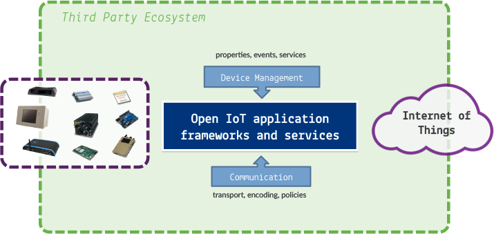

IoT Services & Frameworks
The IoT Working Group fosters the creation of extensible services and frameworks that enable IoT applications on top of open APIs.
Vision
A vast majority of today's IoT solutions are designed in an ad hoc manner. Depending on the business domain and on the targeted platform (OS, H/W capabilities, …) very different and often incompatible architectures are implemented.
We want to provide a set of services and frameworks that application developers can use for building M2M and IoT applications. These services will enable features such as device management, wired/wireless communication, vertical solutions like home automation, …

Frameworks for IoT Gateways
IoT Gateways help manage the interaction between sensors and actuators, and the enteprise and cloud services. Implementing these types of gateways requires specialized knowledge in communication protocols, device management, software update, and hardware configurations. We believe a better way to build IoT gateways is to use a set of common services that can be reused in IoT applications.
We have two frameworks for building IoT gateways: Kura and Mihini.
- Kura is a set of Java and OSGi services that are most commonly required for IoT gateways, including I/O services, Data Services, Cloud Services, Newtorking, etc.
- Mihini, written in the Lua scripting language, provides low-level connectivity management to ensure that a reliable network connection is available, acts as an abstraction layer for underlying hardware and enables smart business data transmission between devices and servers, including the ability to consolidate data locally and use bandwidth-efficient communication protocols.
Industry Services
Building IoT applications for specific industries also requires specific services to be available. Providing developers with some of the basic building blocks makes it easier to develop and deploy these types of applications.
Eclipse IoT currently has the following industry services:
- The SmartHome project is a framework that allows building smart home solutions that have a strong focus on heterogeneous environments, i.e. solutions that deal with the integration of different protocols or standards. Its purpose is to provide a uniform access to devices and information and to facilitate different kinds of interactions with them. This framework consists of a set of OSGi bundles that can be deployed on an OSGi runtime and which defines OSGi services as extension points.
- Eclipse SCADA is a way to connect different industrial devices to a common communication system and post-process as well as visualize the data to operating personnel. It provides a SCADA system that includes a communication service, monitoring system, data archive and data visualization capability